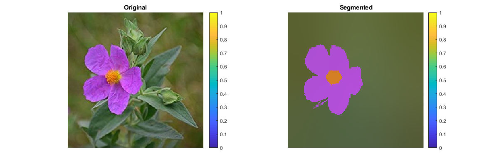
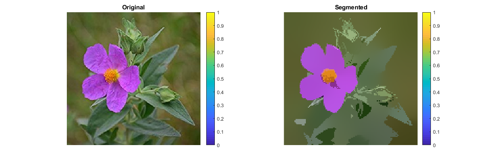

Contents
MyMainScript
close all;
clc;
tic;
Parameters initialization
learning_rate = 0.5; iterations = 25; h_s = 11; h_c = 44;
Mean shift segmentation
img = imread('../data/flower.png'); segmented_img = myMeanShiftSegmentation(img, learning_rate, iterations, h_s, h_c); figure('name','Segmentation','Position', [100 100 1200 400]); subplot(1,2,1), imshow(img); title('Original'); colorbar; subplot(1,2,2), imshow(segmented_img); title('Segmented'); colorbar;
Reporting the Parameters
The following values of parameters gives the best possible segmentation for accurately distinguishing between foreground and background images. In the Analysis section below we show that for other parameter values we get large no of segments(messy), this is happenning because of the presence of low colour gradient in the image(background - greenish, foreground - bluish) and also due to presence of some messy areas around the foreground part.
fprintf('Gaussian kernel bandwidth for the color feature is %f\n', h_c); fprintf('Gaussian kernel bandwidth for the spatial feature is %f\n', h_s); fprintf('no of iterations are %d\n', iterations);
Gaussian kernel bandwidth for the color feature is 44.000000 Gaussian kernel bandwidth for the spatial feature is 11.000000 no of iterations are 25
Analysis
learning_rate = 0.5; iterations = 25; h_s = 7; h_c = 22; % Mean shift segmentation img = imread('../data/flower.png'); segmented_img = myMeanShiftSegmentation(img, learning_rate, iterations, h_s, h_c); figure('name','Segmentation for hs-7, hc-22','Position', [100 100 1200 400]); subplot(1,2,1), imshow(img); title('Original'); colorbar; subplot(1,2,2), imshow(segmented_img); title('Segmented'); colorbar; toc;
Elapsed time is 67.917814 seconds.